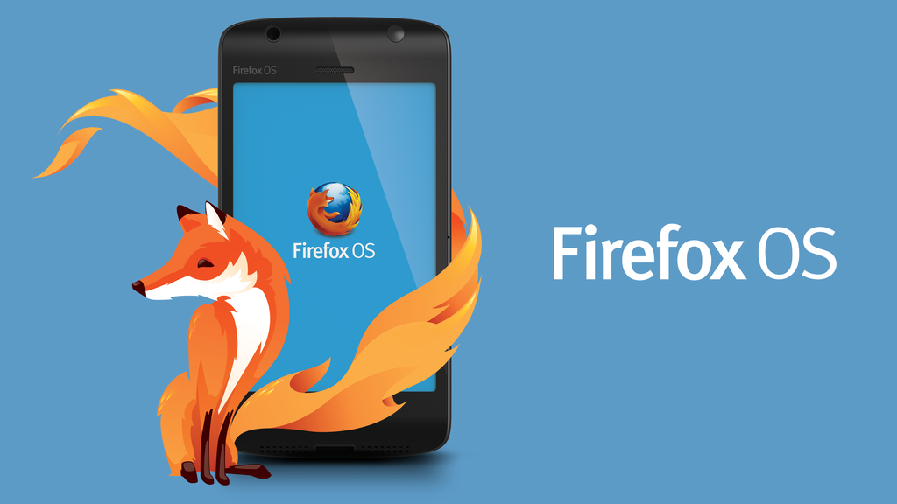
Дамјан Георгиевски
Член на „Слободен Софтвер Македонија“
Дел од локалната Мозила заедница
Хаклаб КИКА
gdamjan @ Github ·
gdamjan @ Twitter ·
gdamjan @ Google+
irc://freenode.net/#lugola
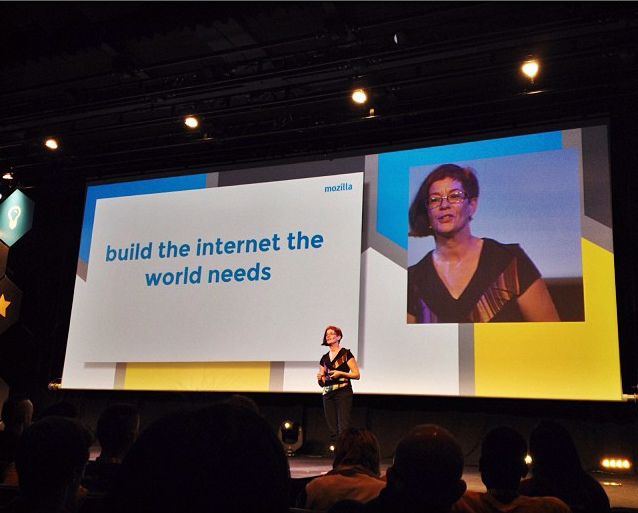
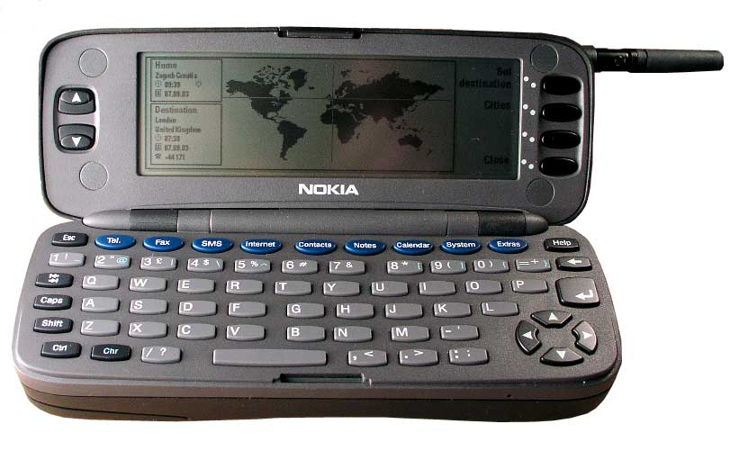
1996
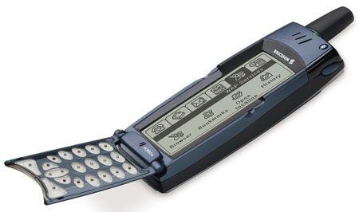
2000
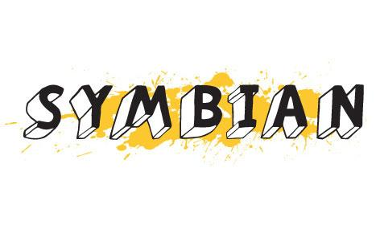
2000 - 2007
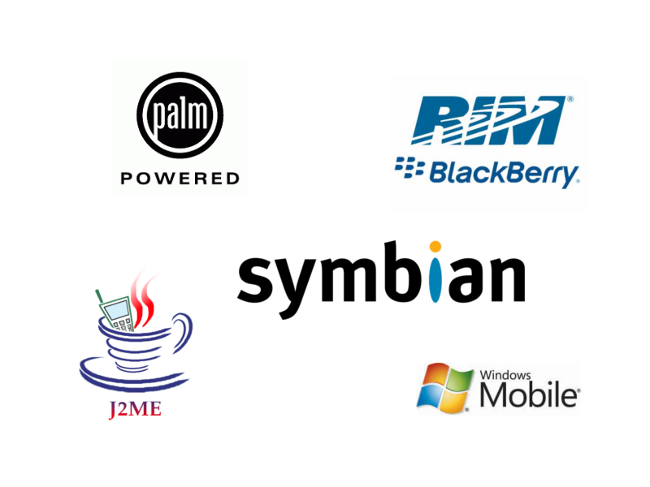
2000 - 2007
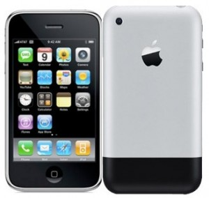
2007
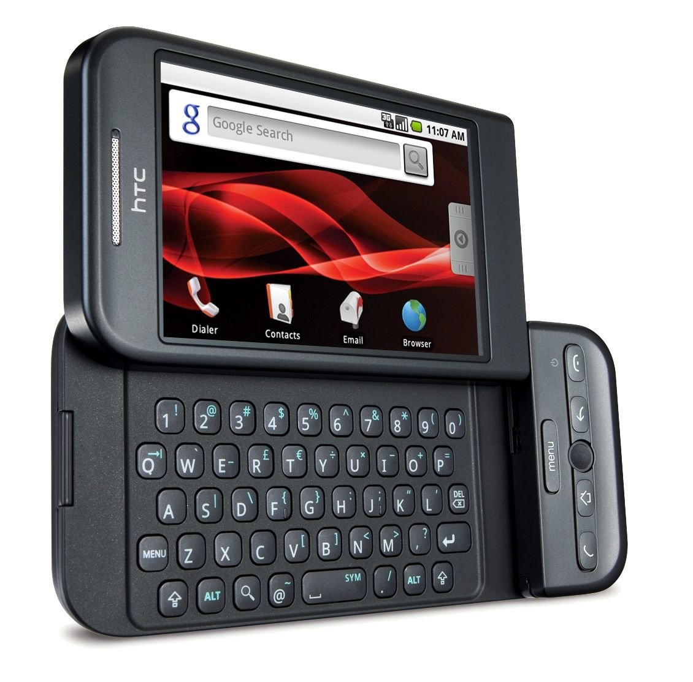
2008 - 2010 -
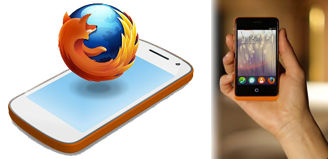
2013
Зошто?
- Нов OS
- ???
- ???
- Профит?
(not really)
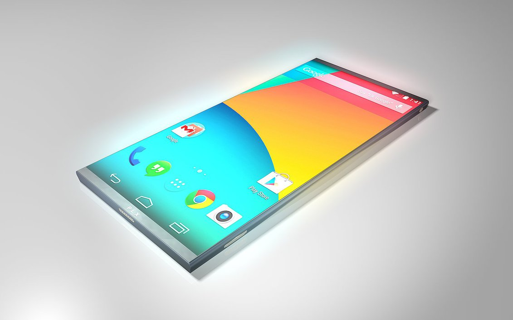
2014 -
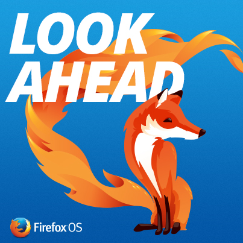
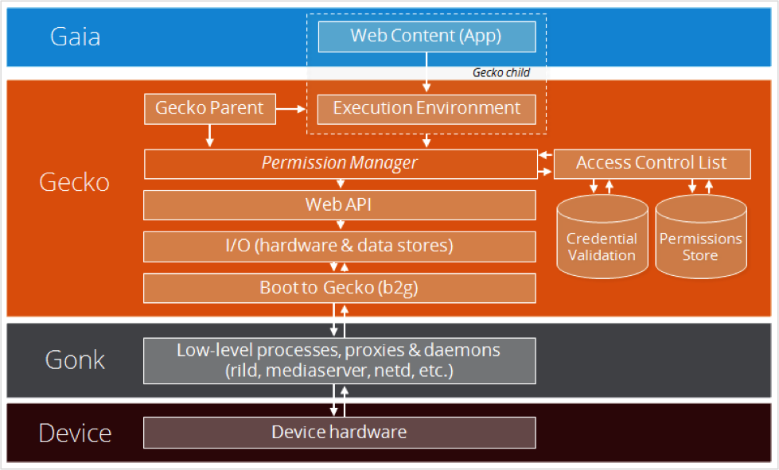

Device/Screen orientation
Ресурси:
MDN - Mozilla Developer Network
Mozilla Hacks